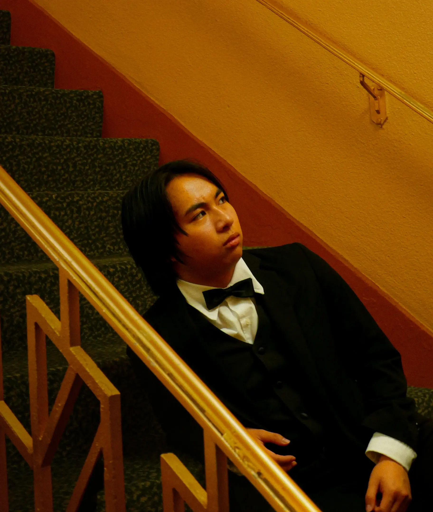
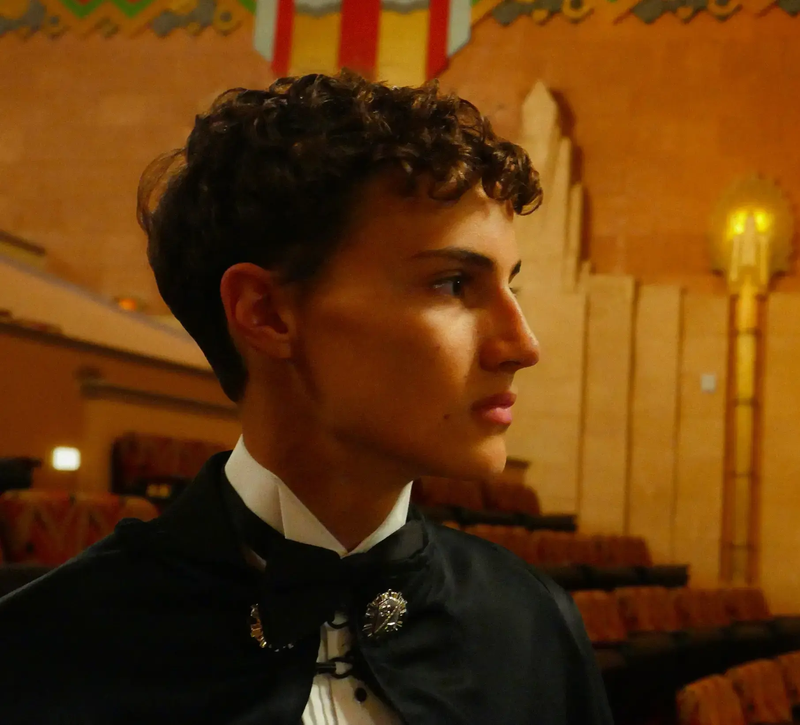
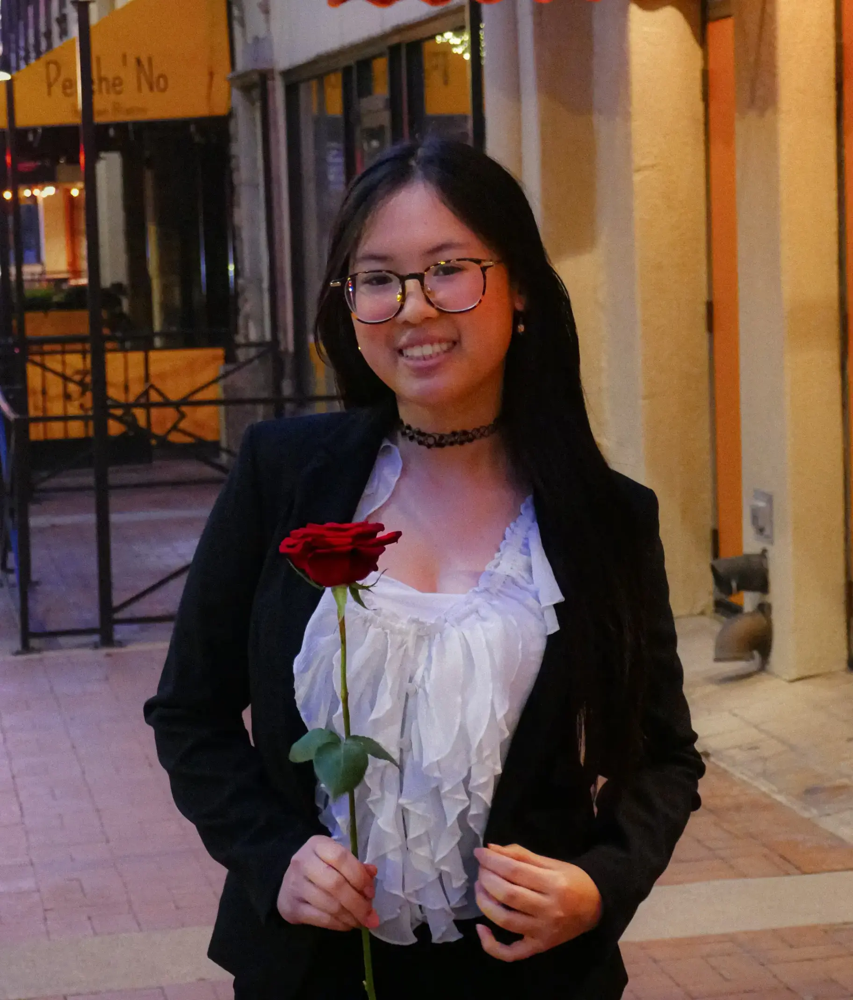
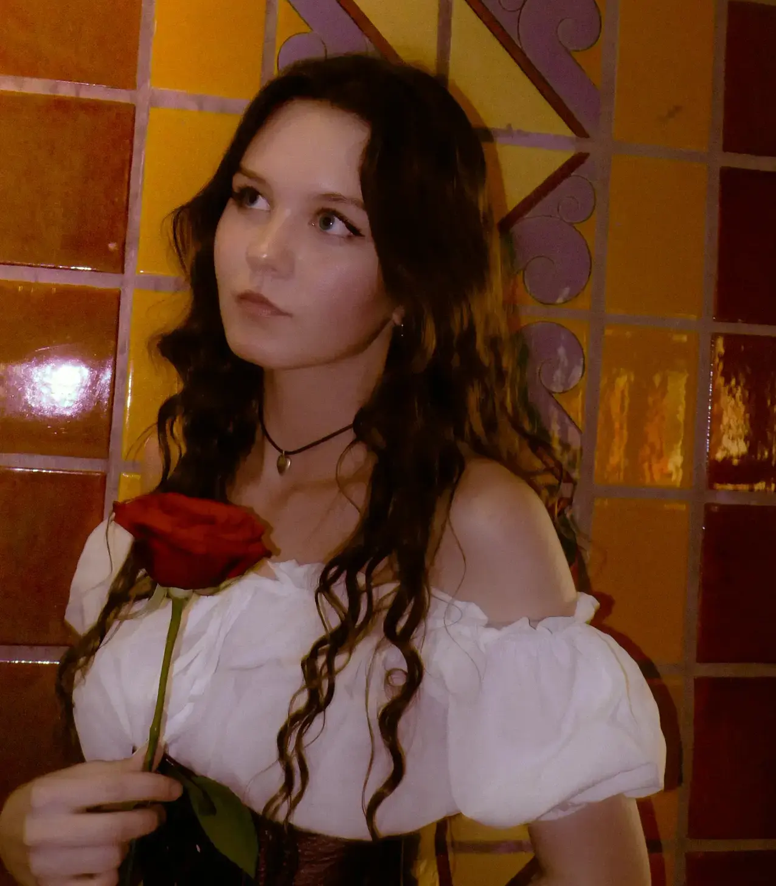
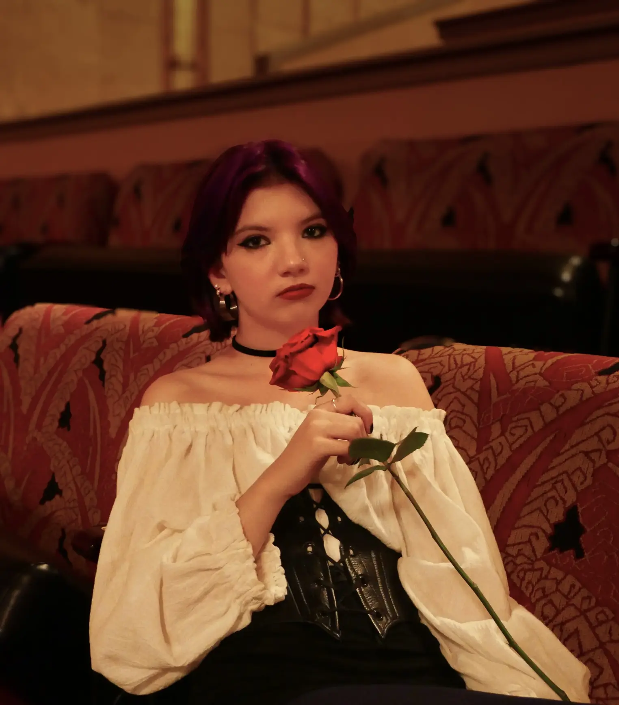

Meet our Party Leaders!
ACT I: PARTY CHAIR
Brian Nguyen
Meet Party Phantom's Party Chair, Brian Nguyen! Brian is an officer of Science Olympiad, Student Council, Spanish Club, and Perspective, while also being a part of Penguin2Penguin, Ambassadors, and Mock Trial. In his free time, Brian loves to start but never finish puzzles, play co-op video games with his friends and family, and watch films and review them pretentiously on Letterboxd (Phantom of the Opera is 4.5/5 stars). As Party Chair, he seeks to advocate for affordability through progressive policies to rework and expand affordable housing initiatives and Social Security. By doing so, he hopes that a world with Party Phantom is one where no one remains hidden in the darkness.
ACT II: PRESIDENT
Reed Bennon
Meet Party Phantom's President, Reed Bennon! On campus, Reed plays the tenor drums with the marching band and is an officer of both International Humanitarian Law Club and Economics Club. He is also active in Science Olympiad, Travel Club, and Spanish Club. In his free time, Reed loves to play the piano and spend time with his two dogs (and two rabbits!). Passionate about our desert and our planet, he is excited to protect the environment through conservation efforts while limiting pollution and exploitation. Reed stands with Party Phantom for a greener future.
ACT III: VICE PRESIDENT
Jenny Tran
Meet Party Phantom's Vice President, Jenny Tran! Around campus, she is the President of Student Council and Penguin2Penguin, Vice President of Ambassadors, and a member of Stage Crew and the girls' tennis team. Jenny enjoys reading romance novels, watching K-dramas, and spending way too much money on food in her free time. She's passionate about advocating for social equity through stricter government reforms, hoping to make life in America easier for all citizens. Jenny is ready to open the curtains and reveal a better future with Party Phantom.
ACT IV: DOMESTIC CHAIR
Abby Philips
Meet Party Phantom's Domestic Chair, Abigail Phillips! Abby is in the RUHS advanced theater program and is also a varsity cheerleader on the RUHS cheer team. Outside of school activities Abby enjoys spending time with The Ronald McDonald House, The Children's Museum, and AMIGOS. She is also an avid caretaker of her younger foster siblings and can be found playing piano, making TikToks, or hanging out with her friends and boyfriend. Abby is excited to bring her immense passion for women's rights and healthcare coverage to the front stage.
ACT V: FOREIGN CHAIR
Rubye Gallaway-Roy
Meet Party Phantom's Foreign Chair, Rubye Gallaway-Roy! Rubye is the President of History Club, Vice President of AP U.S. History Club and Co-President of French Club; as well as a member of Penguin2Penguin. Rubye can often be found playing the Sims 4 while listening to podcasts or reading with her cat. Rubye's passion lies with history and she believes that by using the past, she can unmask a brighter future for our allies across the globe.